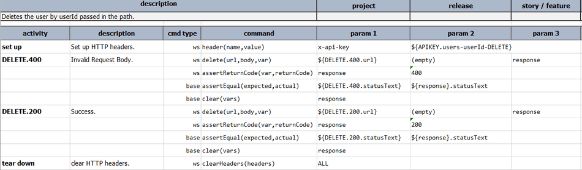
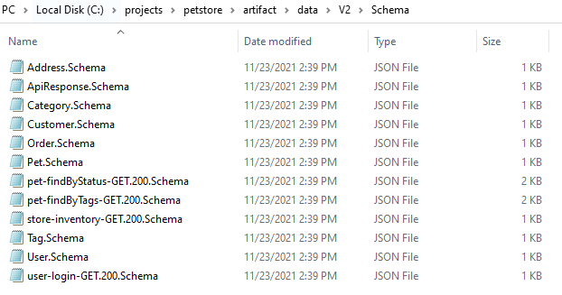
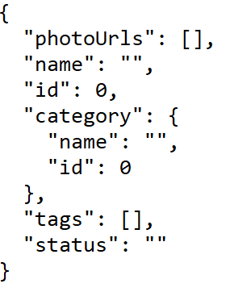
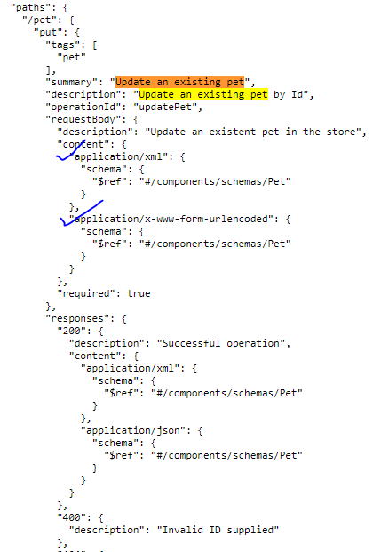

The script takes the following parameters.
-f or --file
This is a mandatory parameter that allows the script to specify the location of the Swagger
file. The file can be in the yaml or JSON formats. The Swagger file should
adhere to the [Open API 3 specifications](https://swagger.io/specification/).
-d or --dir
This is a mandatory parameter that specifies the Nexial project directory inside which the
script needs to be created. In case the project directory is not available the script creates
a new Nexial project directory with all the necessary files and folders inside it.
-p or --prefix
This mandatory parameter acts as a prefix to represent the generated script name.
The Automation Engineer can generate a new script (and corresponding artifacts)
by running the command again with a new prefix.
The following is an example of the command.
nexial-swagger -f C:\Swagger\users.JSON -d C:\projects\users -p V1
In the above example we can see that
C:\Swagger\users.json is the location of the Swagger file,
C:\projects\users is the Nexial directory and
V1 is the prefix.
This script generates the following output:
The script file will be created inside the
artifact\script folder of the Nexial project i.e.
the directory passed using
-d parameter. The name of the file will be the same as the
prefix passed using the
-p parameter.
Consider the following example:-
nexial-swagger -f C:\Swagger\users.json -d C:\projects\users -p V1
The script file will be created inside the
C:\projects\users\artifact\scriptfolder with the
name
V1.xlsx.So the complete path of the script file becomes
C:\projects\users\artifact\script\V1.xlsx.
Scenarios
Consider the following Swagger example:-
You can see in the above Swagger file there are 6
paths. Each of these become
a scenario in the Script file. When the
nexial-swagger command is run on top of the above
Swagger file, the generated script looks as follows:

Scenario Name
Each scenario name generated will have a max of
31 characters. The scenario name will be in the format of
{PATH}-{METHOD}. All the
/ characters will be replaced with
-.
The curly braces(
{,
}) will be removed.
All the spaces in the name will be removed. For example, if the path is
/users/{username}
with the method
DELETE the scenario name becomes
user-username-DELETE.
In case of any paths at root level i.e.
/ the scenario name will be given the format
{TITLE}-{METHOD}. For example, if the title of the Swagger file is
Users Rest API.
For the path
/ with the method
GET the scenario name becomes
UsersRestApi-GET.
In certain situations, the pathname generated may be too big i.e. larger than
31 characters.
In such a case the last
31 characters become the scenario name. Consider the following example where
the path for a
GET method is
/logs/deptId/countryId/regionId/userId.
The scenario name will be
d-countryId-regionId-userId-GET.
Scenario Description
The description of the scenario as shown in the below diagram will be the same as the description of the
path or the Restful API operation.
Activity
Each Activity in the scenario will be named
{method}.{response}. Consider the above diagram
where the
DELETE method has two responses viz
200 and
400.
Since there are two responses, two Activities are created with the names
delete.400 and
delete.200 respectively. You can see the description of the Activity is the
same as the description of the response code.
There are as many activities as the number of responses, but there may be additional Activities by names
Set up and
tear down along with them in case any Authentication mechanism is specified for the
Restful operation.
Steps
The steps in the Activities are almost the same. The
Set up and
tear down
activities have the steps to set the header(s) and clear the header(s) respectively.
The following picture shows the example Steps in a Scenario:
Activity has the following Steps:-
-
The Content-Type for the method. This may not be needed for methods like
GET and
DELETE where there is no Request body.
- Method invocation call where the parameters corresponding to the url, request body and the response
are provided.
- Asserting the
return code, returned by the earlier step.
- Asserting the
status text, returned by the earlier step.
- There is an optional step to assert the correctness of the json response returned, validating
against the Schema.
- Clean up steps i.e. the steps to clear the headers or response variables at scenario or activity
level.
Note:- The variables used in these steps are configured in the
properties file,JSON files as well as schema files.
The properties file contains the variables that need to be configured for running the script. It has the
following configuration variables.
- Nexial defaults
- baseUrl
- Request Body variables
- Cookie Variables
- Path parameter Variables
- Header variables
- Query Parameter variables
- Authentication variables
- Status text variables
Consider the following command.
nexial-swagger -f C:\Swagger\users.json -d C:\projects\users -p V1
When the command runs it creates a properties file with the name as the
prefix passed in.
In this case, it will be
V1. So the name of the properties file generated will be
project.V1.properties. This will be created inside the
artifact folder.
Nexial defaults
The properties will have the following Nexial defaults
nexial.delayBetweenStepsMs=0
nexial.ws.logDetail=true
nexial.ws.logSummary=true
nexial.ws.connectionTimeout=30000
nexial.ws.readTimeout=30000
baseUrl
The
baseUrl is retrieved from the Swagger file as shown in the below screenshot.
Request Body Variables
The Request body variables are the variables used as part of the request body JSON. These variables are used
to configure the value of the variables in the Request body. The format of the Request Variables will
be
{scenarioName}.{response}.{variableName}. Example below.
The variable values are left empty so that the Automation Engineer can configure them.
Cookie Variables
The Cookie variables corresponding to the cookies sent when the request is made.
The format is
cookie.{scenarioName}.{response}.{variableName}.
The variable values are left empty so that the Automation Engineer can configure them.
e.g.:- cookie.users-userId-GET.400.expirationTime
Path variables
The path variables are variables set in the request URL path. For example in the URL
http://xyz.com/users/{userId},
{userId} is the path parameter. Path variables are used to configure these path variable values
by the Automation Engineer.
The format is
path.{scenarioName}.{response}.{variableName}.
The variable values are left empty so that the Automation Engineer can configure them.
e.g.:- path.users-userId-GET.400.userId
Header variables
The header variables are used to configure the headers that are passed in as part of the HTTP request that
is made.
The format is
header.{scenarioName}.{response}.{variableName}.
The variable values are left empty so that the Automation Engineer can configure them.
e.g.:- header.UsersRestAPI-GET.200.x
Query parameter variables
The Query parameter variables are variables appended in the request URL path. For example in the URL
http://xyz.com/users?pageSize=10,
{pageSize} is the query parameter.
Query parameter variables are used to configure the values of the Query parameters by the Automation
Engineer.
The format of is
query.{scenarioName}.{response}.{variableName}.
The variable values are left empty so that the Automation Engineer can configure them.
e.g.:- query.users-GET.200.pageSize
Authentication variables
The Authentication variables are the headers that are passed along with the URL request to ensure the
authenticity of the user. The format of the Authentication is
{AUTHENTICATION_MODE}.{scenarioName}.
The query parameter variables values are left empty so that the Automation Engineer can configure them.
e.g.:- APIKEY.users-userId-GET
Status Text variables
The Status text variables represent the status text retrieved as part of the response to an HTTP request
call. For example, when a call to retrieve specific user details may lead to a 400 response with the status
text
Bad Request while a successful call may yield
OK.
The format is
statusText.{scenarioName}.{response}.
The variable values are left empty so that the Automation Engineer can configure them.
e.g.:- statusText.users-POST.200
Once the nexial-swagger command is run, the Swagger file passed in as part of the command is
saved into the {Nexial-project-directory}/artifact/data/Swagger folder. The name of the file
will be {prefix}.{swaggerFileName}.
For example, if the command is
nexial-swagger -f c:\Swagger\users.JSON -d c:\projects\users -p V1, the swagger file created
becomes:- C:\projects\users\artifact\data\Swagger\V1.users.json
Consider the following example:-
In the above example, you can see that there are various schemas declared like User, Pet, Tag, etc.
The nexial-swagger command generates Schema files inside the {Nexial Project
Directory}/artifact/data/Schema/{prefix}.
The following is an example that demonstrates the generation of the Schema files.

The Schema file contains the JSON Schema. The following is an example of Schema file content.
The Rest API methods like POST, PUT etc. need JSON body to be passed as part of the request.
The Request body template contains the JSON content that needs to be passed as part of the request.
The values corresponding to the keys in the JSON will however refer to the configuration variables
declared as part of the properties file.
The following is an example of Request Body Template:-

This command generates a
bin directory inside the
artifact folder.
This
bin directory will contain the following two files
- run-{prefix}.cmd
- run-{prefix}.sh
These files act as an executable to run the script. The
.cmd file is used on the
Windows machine while the systems with other Operating Systems can use the
.sh file.
The following is an example of batch files.
The current command supports the following Content-Types.
- application/json
- application/octet-stream
Consider the following example where the method's request body is not having the supported Content-Types.

In such a case, the activities will be created with the
cmd type of
step and the
command
observe. The following is an example:-
As of writing the Swagger specification supports the following Authentication.
However, the nexial-swagger command doesn't support OAuth and OpenId Connect Discovery. In such
a case the scenario will create a new activity by the name Warning which contains a step,
that has the cmd type of step and the command observe.
The following is an example:-